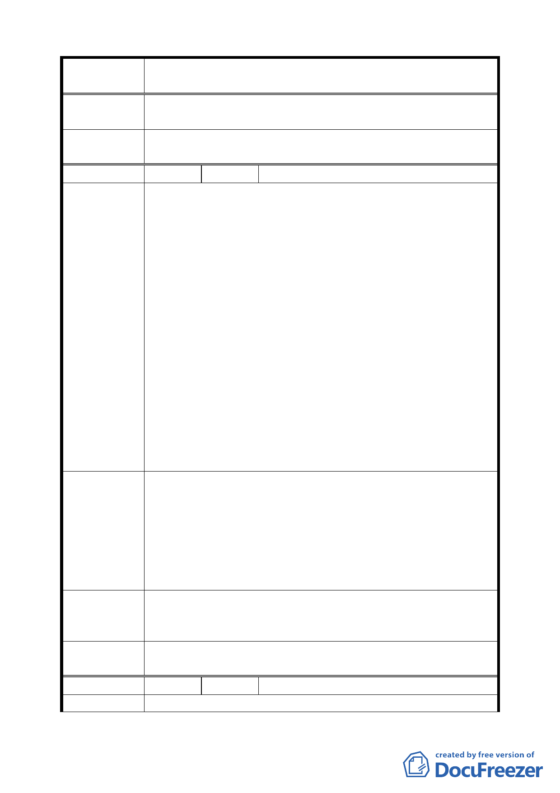

案 名 臺北市文山區都市計畫通盤檢討（主要計畫）案
審查結論
（94.12.21）
委員會議
決議
同編號 9。
編 號 １１ 陳情人 陳和裕等 4 人（09430080700）
陳情位置：師專用地。
建議理由：
一、公開展覽內容既以市地重劃方式辦理，為重劃範圍不明
確應以明確公開，究係公園用地與住宅用地分開辦理抑
或合併辦理。
二、若分開辦理市地重劃，此公園用地是否由 市府另行徵
收？若合併辦理市地重劃則地主分回百分之五五土地，
陳情理由
（主興 7）
難以達到分配比，是不合理之情事，也難以分配土地。
三、難以分配土地之因：
（一）地主捐百分之三十作為公共設施後，依市地重劃方式
開發，將來地主只能分回百分之五五土地分回有限。
（二）會造成政府吃定地主便宜，因公園用地與住宅區之面
積比例為七比三，住宅區土地再加上市地重劃回饋及
規劃其他公共設施，地主能分配的土地寥寥無幾，是
政府變戲法吃定地主。
四、本師專用地如規定需整體依市地重劃方式辦理，則全體
地主又是漫長無期而無奈的等待。
一、公園用地仍太大應可縮小，現有土木工程技術，不難克
服山坡地開發的困難度，尤其緩坡地帶應可再考量放寬
列入住宅區範圍，增與地主分回土地的可能性。
建 議 辦 法 二、市地重劃請允許地主以區塊方式辦理自行開發，住宅區
地主自行與公園用地地主協調，回饋百分之三十或百分
之七十土地做為公園用地，即可依規定之容積興建住
宅，不需整塊師專用地作市地重劃辦理。
專案小組
審 查 結 論 同編號 9。
（94.12.21）
委員會議
決議
同編號 9。
編 號 １２ 陳情人 高良明等 3 人（09430080800）
陳情理由
九